A Context-Specific Nature-Based Framework for Heat Mitigation
Supporting the Everyday Mobility of Older Adults in Kadıköy, Istanbul
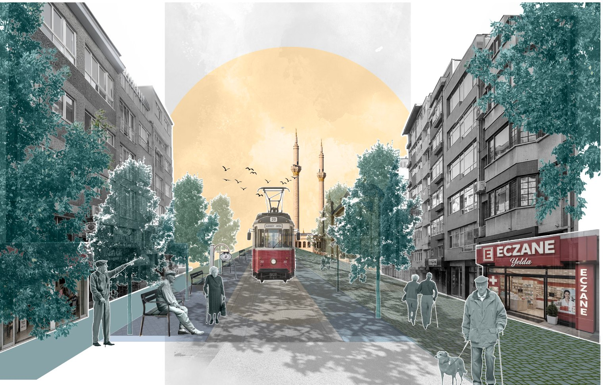
Heatwaves in the Mediterranean are becoming more frequent and more intense, and older adults are among the people most affected. They are physiologically more vulnerable to heat, and many depend on walking to reach their everyday destinations. Nature-Based Solutions (NBS) are widely promoted for urban cooling, but in practice they are often reduced to tree planting. Istanbul's Climate Change Action Plan largely frames them this way, with little attention to whether dense streets can hold trees or whom the cooling should serve.
The thesis asks: how can Nature-Based Solutions be contextualised to mitigate urban heat while supporting the everyday mobility of an ageing population? Its premise is that the social context should decide where to intervene, and the physical context should decide how.
Kadıköy is the case study. It has the largest older population of any district in Istanbul, a dense historic centre, and a transport hub where walking is the main way to get around.
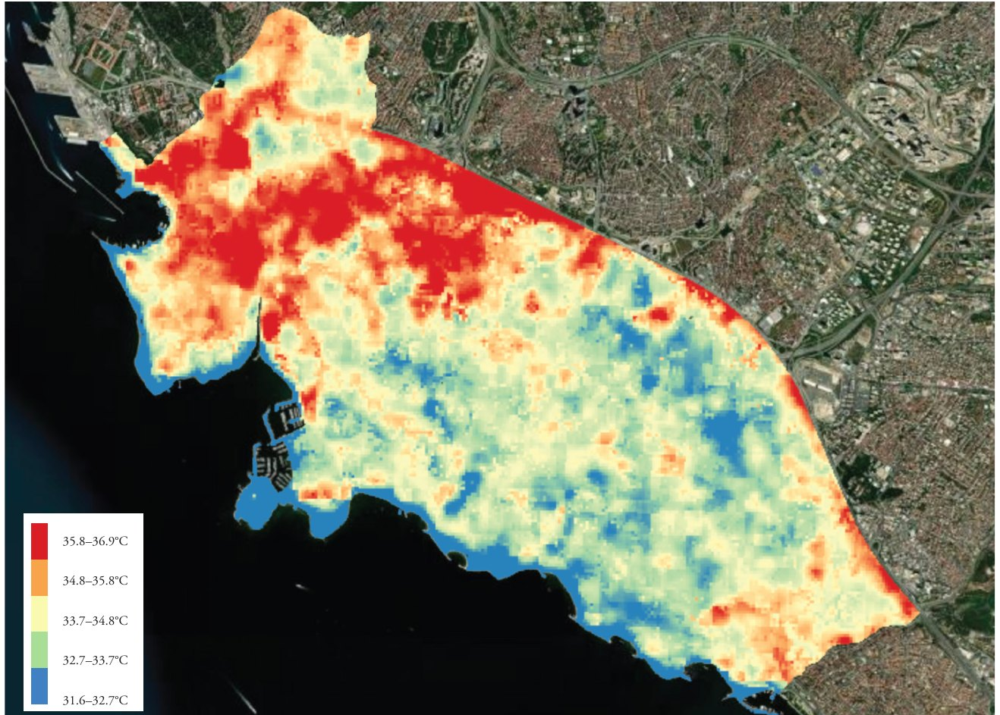
A five-stage, research-by-design method that moves from the district to the street:
1. Locate priority areas. Landsat 8/9 surface temperature for ten summers was processed in Google Earth Engine into a median map and classified by percentile (elevated, high, very high). Hotspots were read against land use, urban form and the share of residents aged 65+, and thirteen urban morphologies were identified. This led to the selection of Caferağa and Osmanağa, the historic commercial centre.
2. Map everyday destinations. An exploratory interview with Medipol University students who had studied older adults' use of public space defined the destination types. 124 destinations (pharmacies, markets, bakeries, healthcare facilities, teahouses, mosques and parks) were then mapped from OpenStreetMap in QGIS.
3. Identify the priority network. Clusters of destinations became anchors, and the streets linking them became priority walking routes: the Green Loop.
4. Contextualise NBS. Ten street sections along the loop were surveyed for building height, width, enclosure (H/W), orientation, street function and planting capacity. Direct sun on pedestrian space was simulated in Ladybug for 23 July 2025, a representative extreme-heat day, and the sections were grouped into four typologies. In parallel, the World Bank's fourteen NBS families were filtered in five steps into a toolbox of seven street-scale tools.
5. Integrate into design. The tools were applied to the most sun-exposed section of each typology, and before-and-after sections compared how street width is shared between vehicles, planting and sealed surfaces.
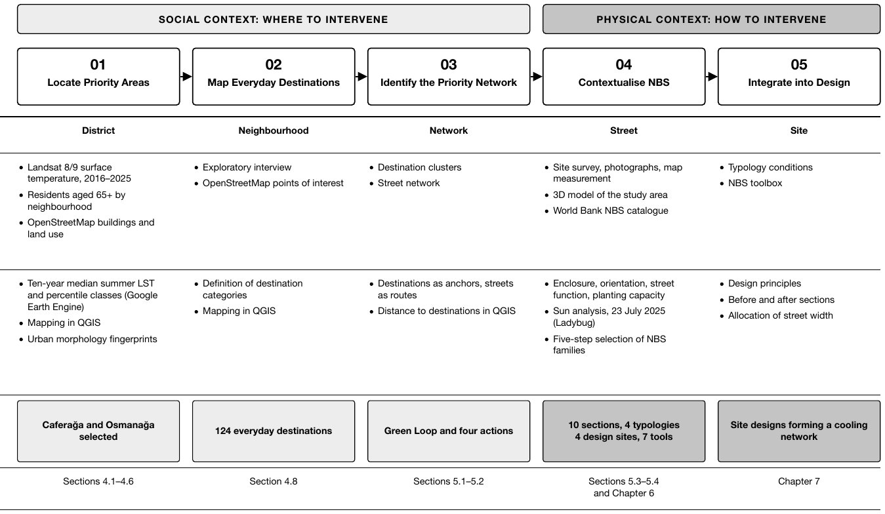
Cool where heat meets everyday life, not where it peaks. The most intense surface heat sits on port land, transport corridors and large single-use sites that older adults rarely use. Cooling for them should be prioritised where elevated heat coincides with their destinations and routes.
A small network serves most trips. Destinations concentrate along Bahariye, Moda and Söğütlüçeşme Caddesi. The Green Loop along these streets passes within 100 m of 82 of the 122 non-park destinations, and within 200 m of 109.
Enclosure alone does not predict exposure. Section A-A is enclosed (H/W 1.7), yet it was among the most sun-exposed because its north–south orientation admits the midday sun. The very narrow D-D (H/W 2.3) stayed largely shaded. Orientation and enclosure have to be read together.
General catalogues need filtering. Only four of the World Bank's fourteen NBS families cool through processes that act at pedestrian level and fit within dense urban fabric.
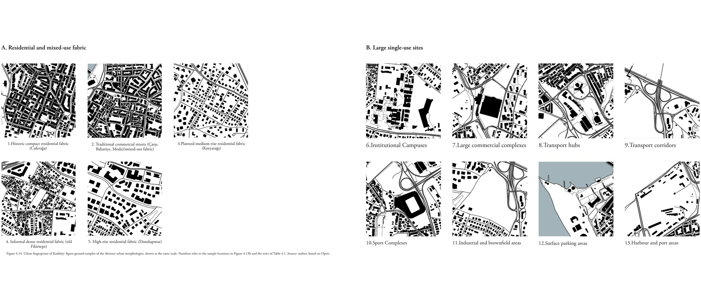
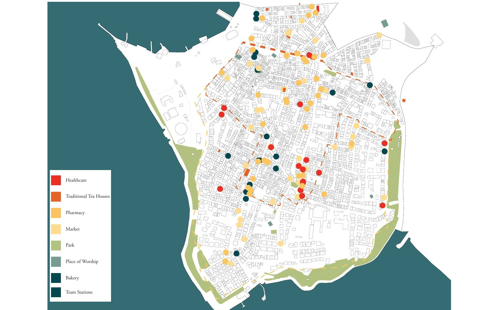
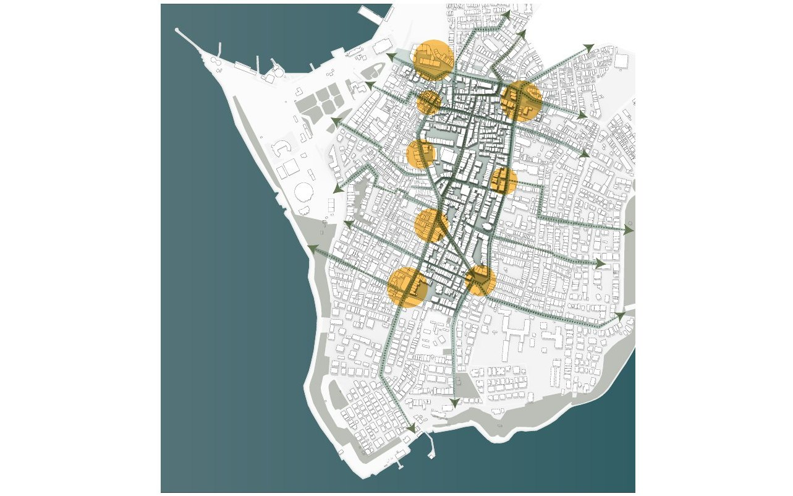
The strategy develops the Green Loop through four actions. Anchor provides shade first where older adults wait and rest at key destinations. Cool improves the immediate surroundings of each anchor. Connect links the anchors with continuous shaded routes. Expand extends the network into residential side streets over time, using the same typologies.
The toolbox has seven tools: street tree, tree in planter box, tree with bench, climbing plant, vegetated pergola, rain garden and permeable surface. Trees go in the ground where the street allows. Where tram infrastructure or utilities prevent this, planter boxes, climbing plants and pergolas take their place. Shade is the primary goal, because mean radiant temperature dominates daytime heat stress for pedestrians.
Four design sites, one for each street typology, test the toolbox. Across them, the share of street width given to planting and permeable surfaces rises from 2% to 35%.
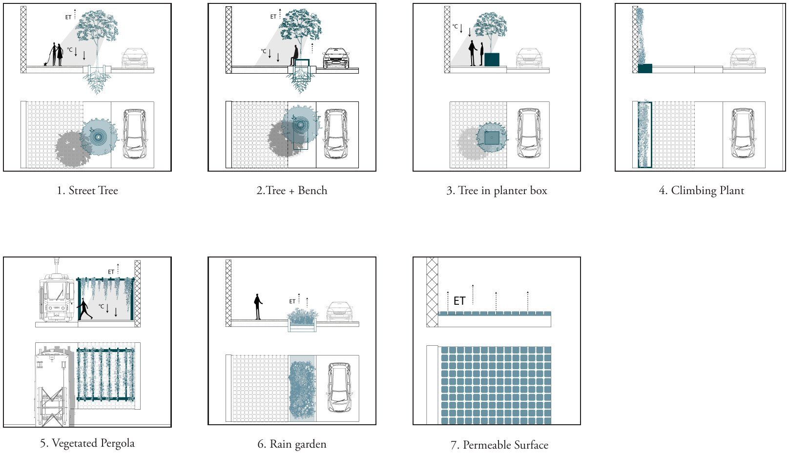
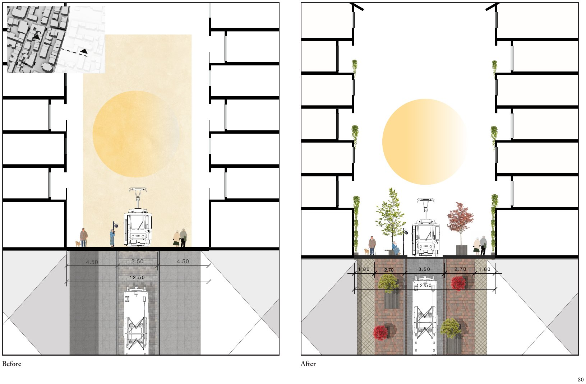
12.5 m wide, H/W 1.7. Pavements split into 1.8 m walking zones and 2.7 m planted zones. Trees in planter boxes sit over the tram infrastructure, with one in-ground tree and bench and climbing plants on both façades.
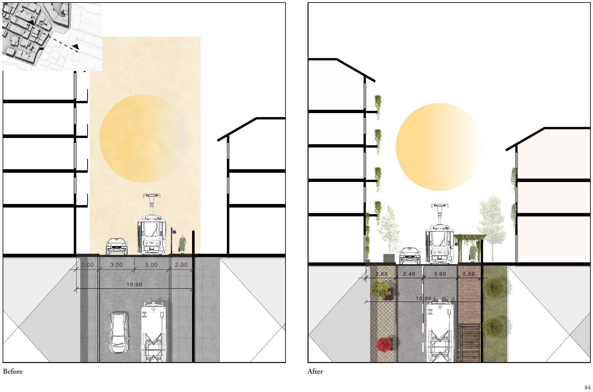
10 m wide, H/W 1.5. The traffic lane is narrowed to 2.4 m so that one pavement widens to 2.6 m for planter-box trees. A vegetated pergola shades the tram stop where older adults wait.
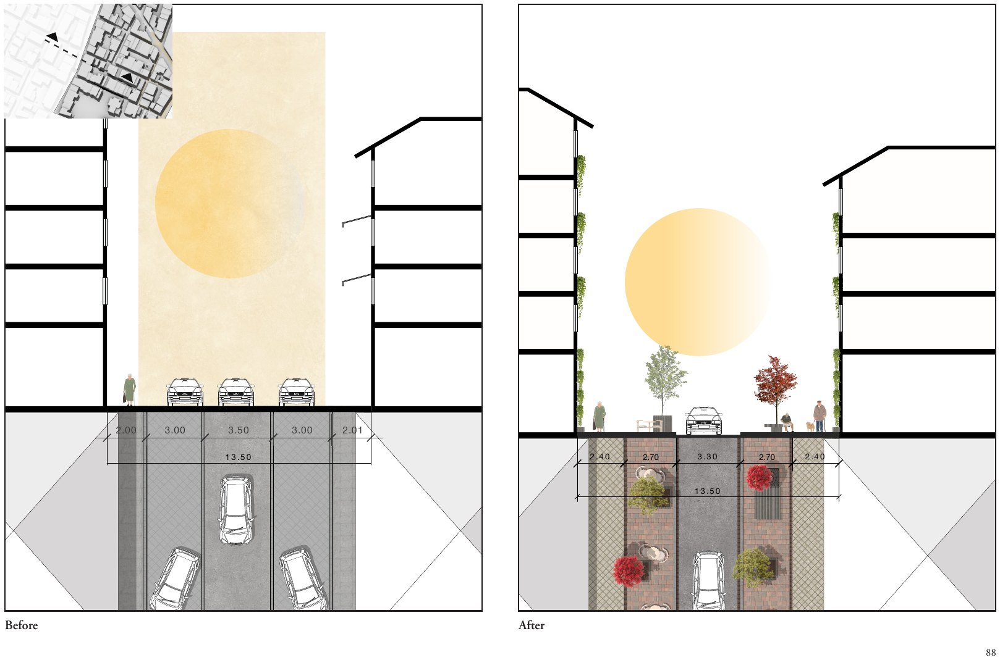
13.5 m wide, H/W 1.3. On-street parking becomes two 2.7 m planted strips with trees, benches and permeable surfaces, and a 3.3 m carriageway is kept for access.
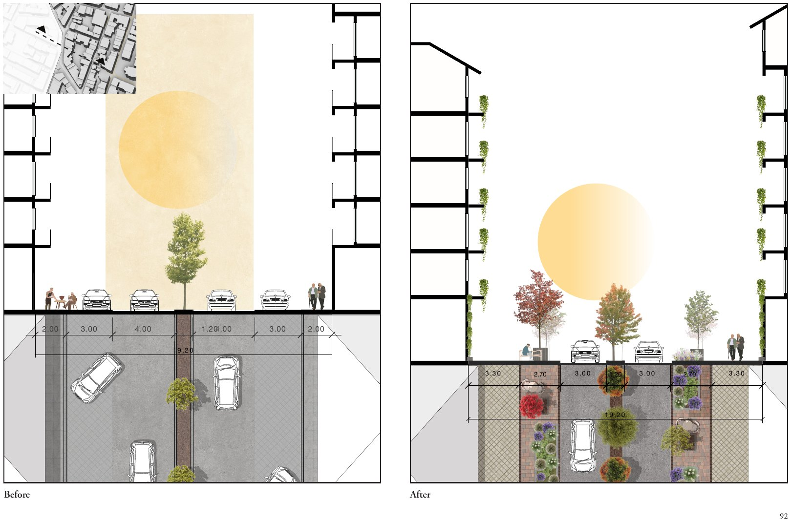
19.2 m wide, H/W 0.9. Parking is removed and the road narrowed to one lane each way. Planted strips with rain gardens and trees join the existing median trees, giving three lines of canopy.
The cooling performance of the designs was not simulated; the expected effects rest on the mechanisms and evidence reviewed in the literature. Land surface temperature describes surfaces rather than what pedestrians feel, and the sun analysis covers one representative day. The destination types came from an exploratory interview rather than from older residents themselves.
The next steps are to test the designs through microclimate simulation or field measurement (PET or UTCI), and to involve older adults through interviews, participatory mapping and accompanied walks.
The framework transfers as a process rather than a set of designs: screen surface heat with free satellite data, map the destinations of the group in question, connect them into a network, classify its streets and select NBS by cooling process and fit. The social lens can also change, for example to schools and playgrounds for children or transport stops for outdoor workers.